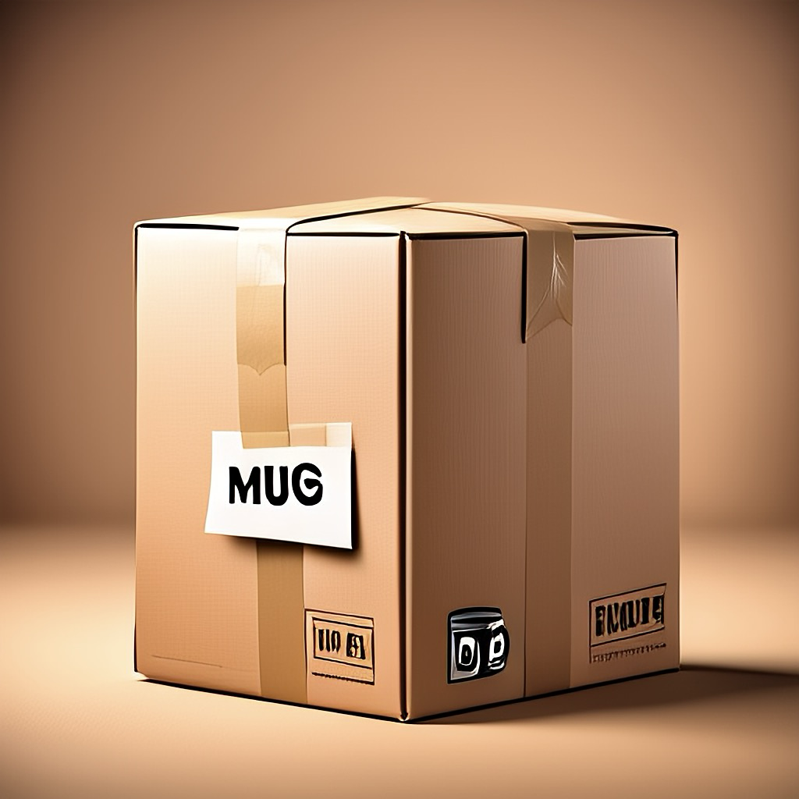

Comandos básicos de Git que necesitas saber
Comprender Git puede ser más fácil si lo imaginas como enviar paquetes (tus archivos) a una bóveda segura en otro país; esa bóveda es GitHub. Al igual que al enviar un paquete por correo, hay pasos que debes seguir para preparar, organizar y enviar tus archivos de forma segura. Git es la herramienta que te ayuda a gestionar cada parte de este proceso.
git init
Este comando inicializa un nuevo repositorio Git en la carpeta de tu proyecto. Úsalo cuando estés comenzando un nuevo proyecto y quieras rastrear sus cambios con Git.
git init
📦 Analogía
Piensa en esto como conseguir unas cajas vacías nuevas donde colocarás los artículos (archivos) que planeas enviar.
git add
Este comando le dice a Git qué archivos quieres incluir en la próxima instantánea (commit).
Para agregar todos los archivos:
git add .
Para agregar un archivo específico:
git add [archivo_especifico.txt]
📦 Analogía
Esto es como colocar artículos dentro de tu caja. Por ejemplo:
git add taza.txt
Estás poniendo una taza dentro de la caja.
git commit
Este comando guarda los cambios que has agregado, junto con un mensaje que describe lo que hiciste.
git commit -m "Un mensaje que explica el commit"
📦 Analogía
Esto es como sellar tu caja con cinta y etiquetarla. Por ejemplo:
git commit -m "Esta es una taza, es muy frágil"
Estás sellando la caja y escribiendo en ella: "Esta es una taza, es muy frágil".

git status
Este comando muestra el estado actual de tu proyecto: qué archivos han cambiado, cuáles están preparados para el commit y más.
git status
📦 Analogía
Esto es como revisar lo que hay dentro de la caja. Puedes ver si está abierta, qué se ha añadido y qué aún necesita ser sellado. Si la caja aún no está sellada, puedes ver lo que hay dentro, pero si está sellada, este comando te otorga una genial visión de rayos X para ver lo que hay dentro.

git log
Este comando muestra un historial de todos tus commits: los mensajes que escribiste y cuándo hiciste los cambios.
git log
📦 Analogía
Esto es como hojear tu libro de registro de envíos. En él se enumeran todas las cajas que has enviado, cuándo las enviaste y qué etiquetas (mensajes) escribiste en cada una.
git push
Este comando envía tus cambios confirmados a un repositorio remoto como GitHub.
git push origin main
📦 Analogía
Esto es como entregar tu caja sellada y etiquetada a la empresa de transporte. Finalmente la estás enviando a la bóveda segura (GitHub) en otro país. Hasta que no hagas push, la caja sigue en tu casa, preparada, pero no entregada.
Para ver estos comandos en VS Code, consulta la sección de Git en VS Code.
Consideraciones adicionales
Aunque la analogía de la caja funciona perfectamente, debes saber que el comando git init rara vez se utiliza. Normalmente, el flujo de trabajo con Git es el siguiente:
graph TD
A[Crear repositorio en GitHub] --> B[Clonar repositorio localmente];
B --> C[Hacer cambios en tu código];
C --> D[Preparar cambios con git add];
D --> E[Confirmar cambios con git commit];
E --> F[Enviar a GitHub con git push];
F --> G[Verificar repositorio remoto];
G --> |Seguir codificando| C;Si clonamos un repositorio remoto, podemos saltarnos el paso de hacer git init.